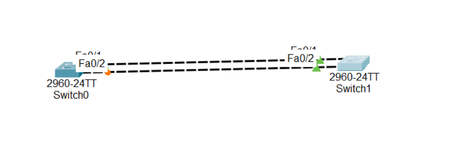

Switch0:
Switch(config)#spanning-tree vlan 1 root primary
Switch1:
Switch(config)#spanning-tree vlan 1 priority 4096
Switch1:
Switch(config)#int f 0/2
Switch(config-if)#spanning-tree portfast
Switch(config-if)#exit
Switch0:
Switch(config)#spanning-tree mode rapid-pvst
Switch1:
Switch(config)#spanning-tree mode rapid-pvst
To Verify:
VLAN0001
Spanning tree enabled protocol ieee
Root ID Priority 4097
Address 000C.CF63.8C1D
This bridge is the root
Hello Time 2 sec Max Age 20 sec Forward Delay 15 sec
Bridge ID Priority 4097 (priority 4096 sys-id-ext 1)
Address 000C.CF63.8C1D
Hello Time 2 sec Max Age 20 sec Forward Delay 15 sec
Aging Time 20
Interface Role Sts Cost Prio.Nbr Type
---------------- ---- --- --------- -------- --------------------------------
Fa0/1 Desg FWD 19 128.1 P2p
Fa0/2 Desg LSN 19 128.2 P2p
Switch is in rapid-pvst mode
Root bridge for: default
Extended system ID is enabled
Portfast Default is disabled
PortFast BPDU Guard Default is disabled
Portfast BPDU Filter Default is disabled
Loopguard Default is disabled
EtherChannel misconfig guard is disabled
UplinkFast is disabled
BackboneFast is disabled
Configured Pathcost method used is short
Name Blocking Listening Learning Forwarding STP Active
---------------------- -------- --------- -------- ---------- ----------
VLAN0001 0 0 0 2 2
---------------------- -------- --------- -------- ---------- ----------
1 vlans 0 0 0 2 2